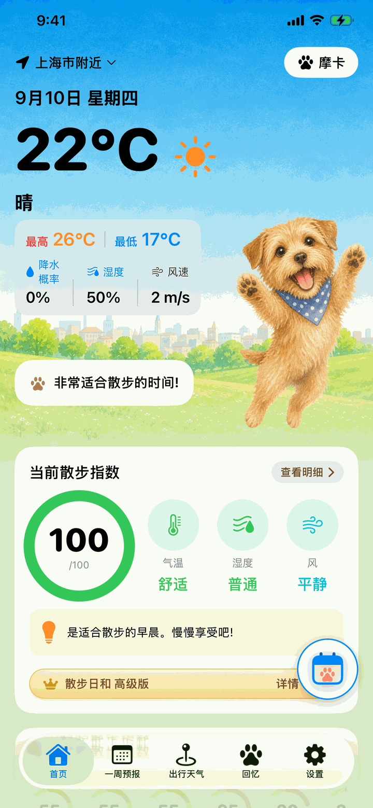
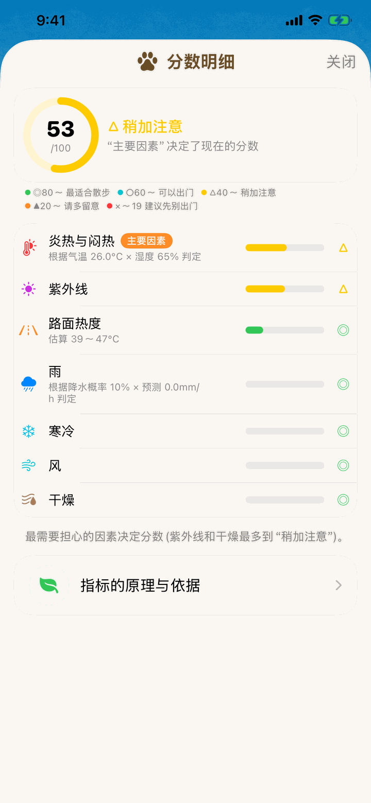
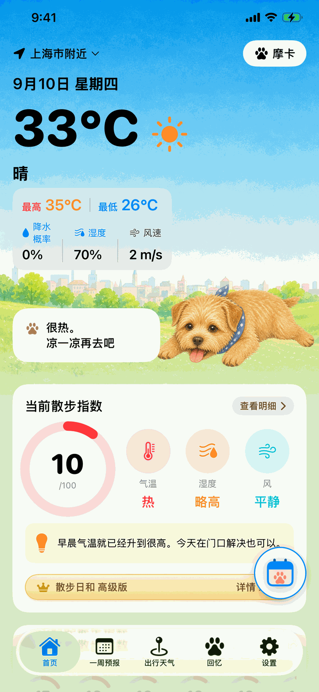
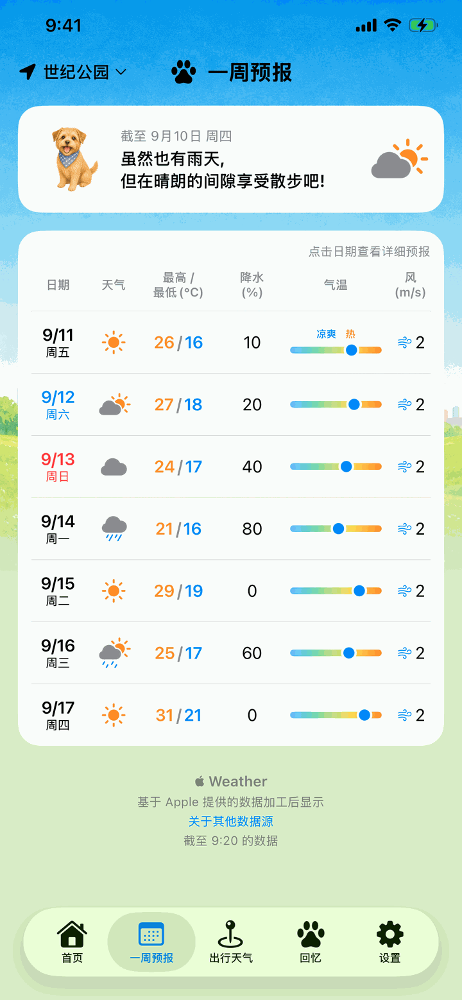
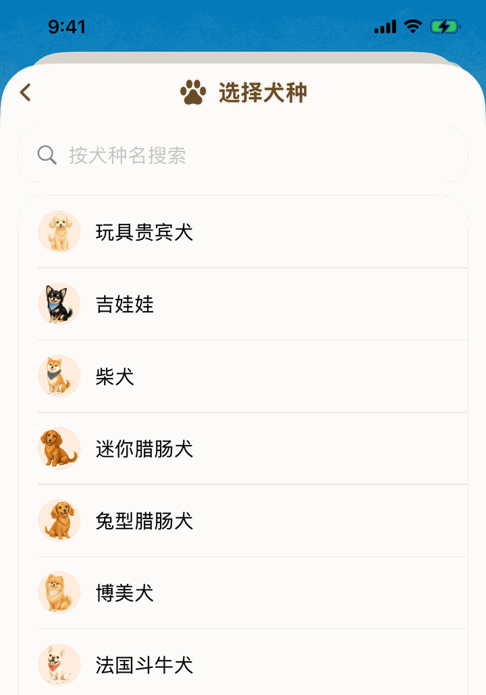
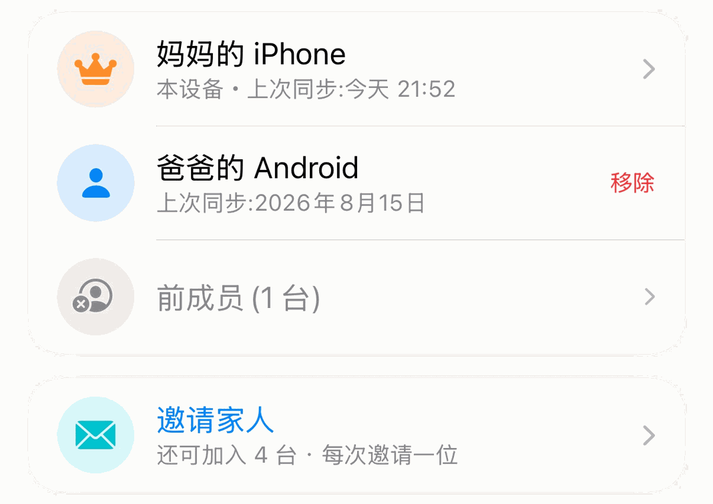
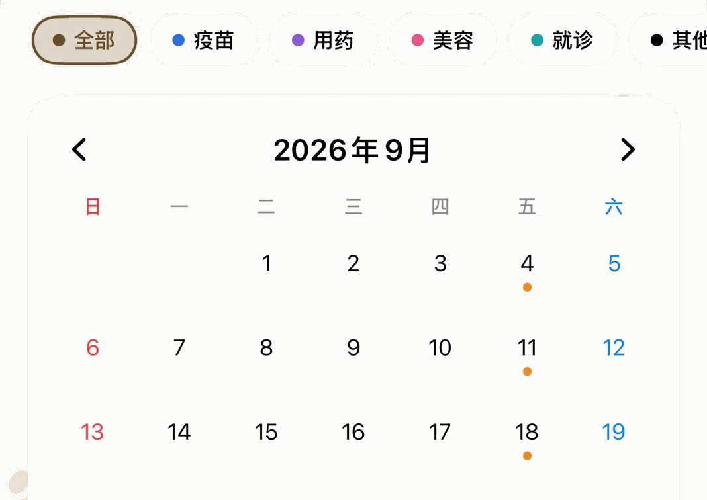
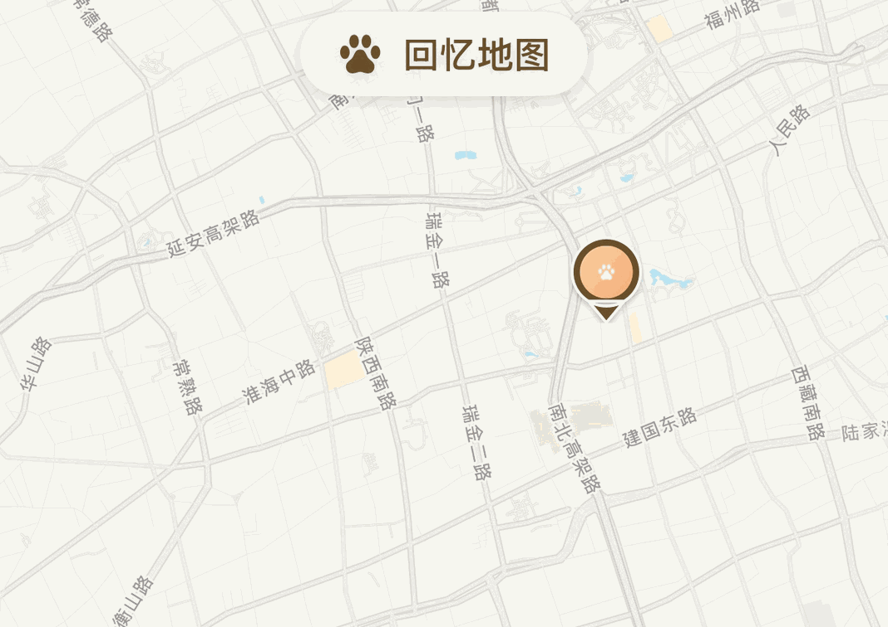

对人来说是舒服的好天气，脚下却可能很烫。
天气预报数字
走路时的温度
散步日和会看到藏在气温背后的东西：路面的热度、湿度、风和紫外线。把这些汇总成一句“现在出门没问题吗？”，每天早上告诉你。

今天的散步指数
综合气温、湿度、雨、风和路面温度，用 0～100 告诉你今天适不适合散步。还附带每小时的指数和“推荐的散步时间”。早上打开看一眼，今天的安排就定了。

为什么是这个分数，全都给你看
分成炎热、路面、雨、寒冷、风、紫外线、干燥 7 个要素，随时查看分数明细。判断的依据和出处也都放在应用里，你可以自己确认，不必只听我们说。

路面的热度和中暑风险
根据太阳高度和云、雨的情况估算柏油路面的热度，提示可能烫伤肉垫的时段。中暑风险依据日本环境省的暑热指数分级判断，短鼻犬种、幼犬和老龄犬会判断得更谨慎。

未来一周，一目了然
未来 7 天的最高、最低气温、降水概率和风一目了然，可以提前安排散步和出行。把狗狗运动场或旅行目的地登记为地点，也能查看那里的狗狗视角天气。

贴合你家的狗狗
登记犬种、年龄和体型后，所有判断都会随之调整。支持 120 个犬种，多只饲养也可以全部登记。

同样的天气，每只狗狗的答案都不一样。
短鼻子的狗狗不容易散热。贴近地面的小型犬，会直接受到路面的热气。厚厚的双层毛和怕冷的短毛，舒服的一天也完全不同。散步日和会把这些差别都算进去。

散步日和 高级版
基本功能保持免费。想要多一点帮助时，高级版会加上这 4 项。
-
家人共享

全家人一起，把狗狗的记录合而为一
体重、护理记录和回忆地图可与家人的设备同步。只要发送邀请码，iPhone 和 Android 之间也能共享。只需 1 台设备订阅，受邀家人(最多 5 台设备)免费加入，还能使用日历和回忆地图。
-
日历

自家狗狗的日程，随心记进日历
美容、就诊、心丝虫预防等，自由添加狗狗需要的安排，并用照片和备注记录下来。疫苗和驱虫的安排，不订阅也能使用。
-
回忆地图

把散步的回忆，连照片一起留在地图上
在一起走过的地方留下照片和一句话。图钉越多，和狗狗的回忆就越会变成一张地图。免费也能试用 3 条。
-
每日背景

10 张照片和各种狗狗，每天轮流出现在首页
免费版一直显示同一张照片。订阅后，“今天是哪只狗狗呢？”会成为每天早上的小期待。
中国大陆每月 15 元价格因国家或地区而异，购买前会显示。iOS 版和 Android 版都能订阅。
仅在开始共享的设备订阅高级版期间，家人才能使用日历和回忆地图。在日本国内，高级版还包括实时提醒，以及可看到 15 小时后的降雨预测和雷电雷达。每日背景中出现的是已有插画的犬种。付款和取消的条件，请见《基于日本特定商业交易法的标示》(日语)。
可以放心使用
- 没有广告
- 基本功能免费，高级版是可选的
- 不需要注册账号
- 狗狗的信息和登记的地点都保存在你的手机里(使用家人共享或实时提醒时除外。详见隐私政策)
- 位置信息只用于获取天气
- 即使不允许使用位置信息，登记地点后也能使用全部功能
- 每个指标的依据和出处，都在应用里公开

常见问题
不允许使用位置信息也能用吗？
可以。在首页的地点菜单中登记地点后，全部功能都能使用。
显示的路面温度是实测值吗？
不是。那是根据太阳高度与云量估算的参考值。出门前请一并做"5 秒检查"：把手放在地面上停留 5 秒。
在日本以外也能用吗？
可以。除了雨云雷达、实时提醒、气象警报和实测的当前气温以外，所有功能在任何地方都能使用。这几项使用日本气象厅的数据，仅覆盖日本国内的地点。
一直用免费版可以吗？
可以。散步指数、中暑与路面温度的判定、一周预报等基本功能都可免费使用。护理日历中疫苗、驱虫等计划也可免费使用。散步日和 高级版是在此之上增加功能的可选方案。
散步日和 高级版在 Android 版也能用吗？
可以。iOS 版与 Android 版都能订阅。基本功能在两个平台上也都可免费使用。
家人共享需要全家人都订阅吗？
不需要。只需开始家人共享的那 1 台设备订阅散步日和 高级版即可。使用邀请码加入的家人(最多 5 台设备)可免费加入，iPhone 和 Android 之间也能共享。